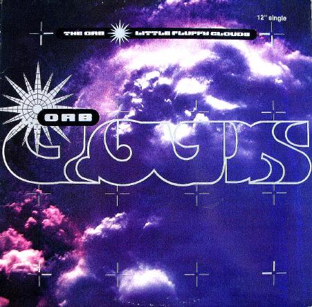

Rhythmic techniques in ambient music are often subtle and understated. Some ambient pieces have no obvious pulse, while others use slow-moving repeated patterns to create a sense of movement. Unlike dance music, ambient rhythm is usually designed to support the atmosphere rather than attract attention. Repetition and gradual change are more important than strong beats or complex rhythms.
Example:
An ambient piece may use gentle rhythmic loops or repeating patterns that slowly evolve over time, helping to create a flowing and immersive listening experience.